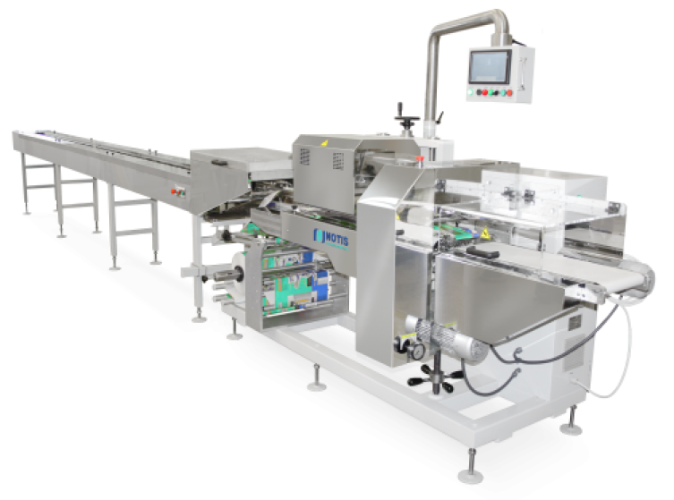

Название машины или решения

OOOO
OOOO
1. Описание первого пункта в нескольких предложениях: что было сделано, за что отвечает данный пункт.
2. Описание второго пункта в нескольких предложениях: что было сделано, за что отвечает данный пункт.
3. Описание второго пункта в нескольких предложениях.
4. Описание второго пункта в нескольких предложениях.
5. Описание второго пункта в нескольких предложениях.
Производительность
3 м/сек
Ширина ленты
до 1000 мм
Грузоподъемность
45 кг
Гарантия на оборудование
2 года